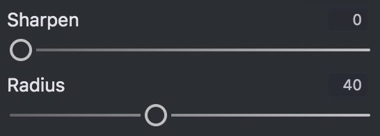
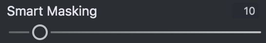
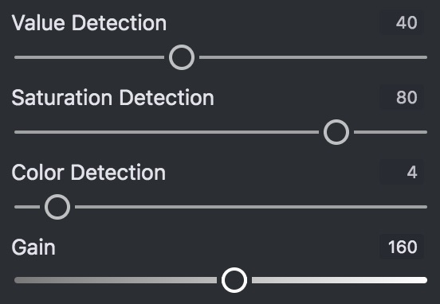
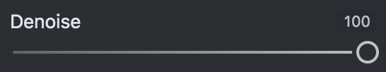

Overview
This guide aims to provide a detailed look into the use of the details filter. This guide assumes that you have read and understand Basic Editing for Amature Photographers.
Basic Sharpness Concepts
The goal of image sharpening is to elminate unwanted blur from the image. To accompish this we need at least two paramaters, how strongly the blur is applied to the image, and the radius (distance) of the blur. These paramaters are given as:
- Sharpen: how strong the blur elimination should be applied.
- Radius: what is the radius of the blur.
If these settings are set correcly, edges will have increased contrast. If the radius is set too high you will likely notice outlines around edges.
Generally a good method to set these settings is:
- Zoom in to at least a 1:1 View. You must be able to see each pixel to accuratly judge sharpness.
- Set Sharpen to 100.
- Set Radius to 0 and increase until the sharpness area matches the blurs area.
- Set Sharpen to the lowest value that suffeciently sharpens the image.
Smart Masking
Appling sharpness to the entire image can introduce unwanted image noise, so we use masking to only sharpen the parts of the image with important details. This process is automaticly applied by default, but Open Darkroom gives you many ways to minipulate the masking process. The simplest why in wich you can minipulate the mask is by adjusting "Smart Masking", a large value masks off more of the image, thus sharpening less high frequency noise.
Visualize Image Processing
To get the most out of smart masking it is important to understand the "Visualize Image Processing" mode. In order to understand the VIP mode we must consider:
- Green: sharpend pixels, brighter green = more sharpening
- Black: unaffected pixels
- Blue: denoised pixels, brighter blue = more denoising (see Denoising)
 Only denoising applied.
Only denoising applied.
Due to the nature of sharpening and denoising, pixels cannot be both sharpened and denoised.
Note: denoised pixels will not be visable unless the Denoise slider is set, and Smart Masking is enabled.
Tweaking Smart Masking
The image mask is genorated by computing a modified standard deviation within a group of nearby pixels. There are two ways to tweak this masking:
- Detection Modes: The smart mask algorithm takes into account varyations in HSL information. There are 3 normalized controls for how much each HSL component is considered.
- Saturation: tells the masking algorithm to look for varyations in saturation. Usually the most effective.
- Value: tells the masking algorithm to look for varyations in luminance. Usually the second most effective, good for detecting strong edges.
- Color: tells the masking algorithm to look for varyations in hue. High values of Color Detection can cause unexpected behavior.
- Gain: increase or decrease the sensitivity to more subtle noise.
Note: normalized means that only the ratio of these values to eachother have meaning, not their exact value. For example 0,20,40 is the same as 0,2,4
Denoising
Most of the information relevent to denoising has already been covered. Here is what remains:
- You must set both the Denoise slider and the Smart Masking slider to denoise any pixels
- Radius also affects the denoising radius
Denoising Tips:
- Sharpen by denoising: on very noisy images sometimes the best way to sharpen an image is to denoise around the edges. Often sharpening will look out of place on images with heavy denoisng, and leaving edges noisy will give the appearance of sharpness.